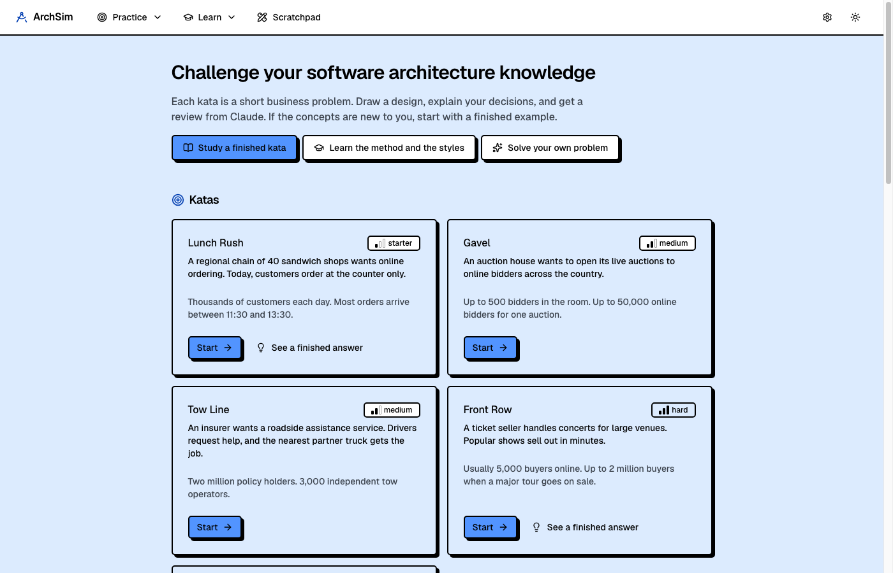
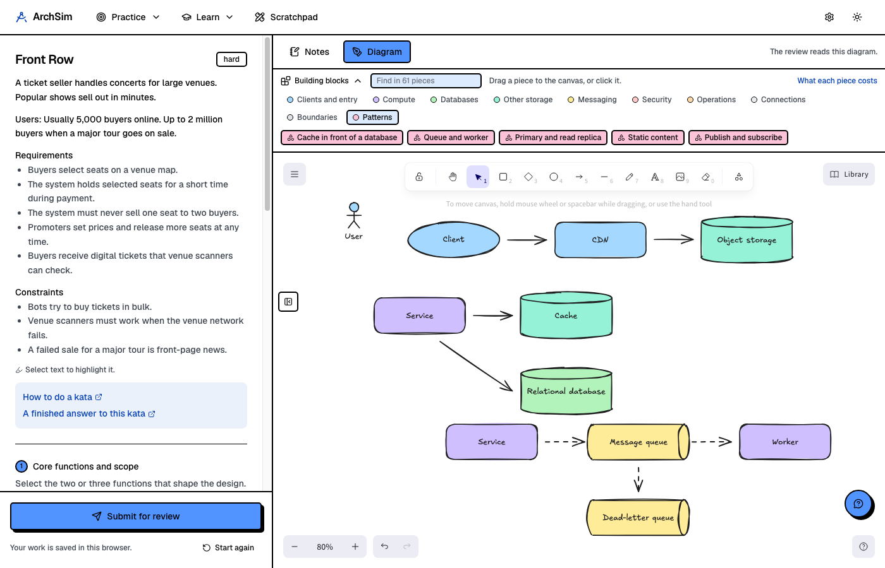
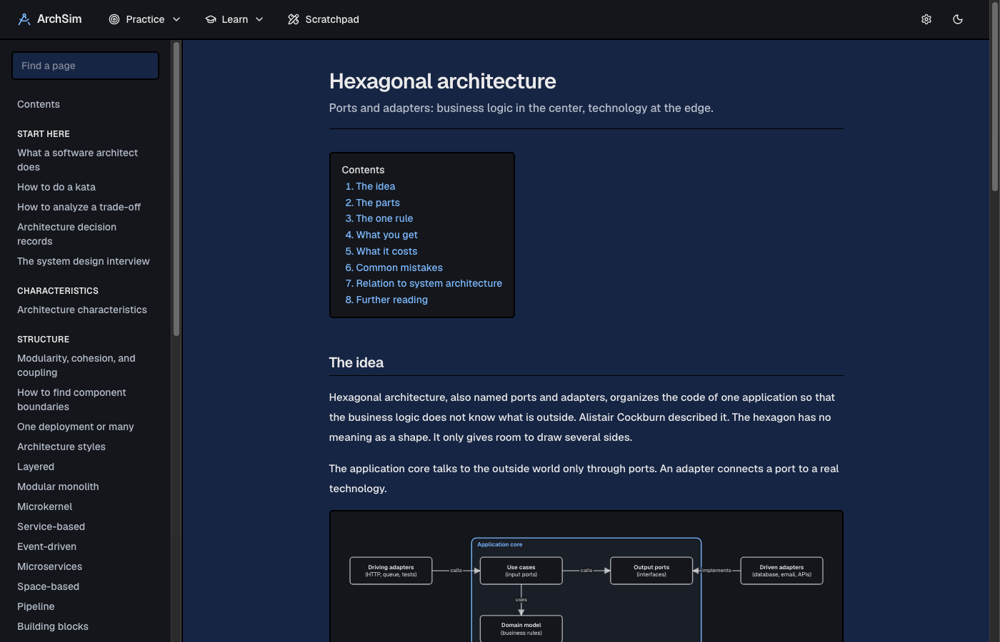

Practice software architecture, and get your reasoning reviewed.
Take a short business problem, draw a design, and explain your trade-offs. An AI reviewer reads your diagram and grades how well you reasoned, in about a minute.

The code is getting cheaper. The decisions are not.
AI tools now write a large part of the code. The decisions that stay with people are the expensive ones: how a system is divided, where its data lives, how its parts talk, and which qualities it must have.
Those decisions are architecture, and they are hard to practice. You can attempt a design alone, but nobody tells you where your reasoning is weak. ArchSim does.
One kata, five steps, one review
Set the scope
Name the few functions that shape the design, and what you leave out.
Select the characteristics
Pick the three qualities that drive this problem, and tie each one to the text.
Select a style
Choose the simplest architecture style that supports them.
Draw the diagram
Use the built-in Excalidraw canvas, as in a real interview.
State the trade-offs
Say what your design gives up, and where it fails first.

A review that shows its evidence
- Seven dimensions, each scored from 1 to 5.
- A quote from your own diagram or text for each score.
- One concrete change to make next time, for each dimension.
- The top risk in your design.
- The questions a review board would ask you.
No single correct answer
Every architecture is a set of trade-offs. The reviewer grades the quality of your reasoning against the problem. It does not compare your design with a reference solution.
Built for practice
Katas and interview questions
From a sandwich chain to a ticket seller with two million buyers, plus the classic system design questions.
A tutor, not an answer key
A help chat next to the canvas explains concepts and gives hints. In a kata, it does not hand you the design.
Highlights and a notepad
Mark the sentences that matter and think in a private notepad, as with pen and paper.
Solve your own problem
Paste any problem, for example an interview question you had, and get a worked answer with a diagram.
Scratchpad
Free boards with a canvas and notes, saved automatically, for designs that are not katas.
Your data stays local
No account and no database. Attempts and boards are plain files on your computer.
A wiki for the concepts you meet
- 42 pages on trade-offs, modularity, styles, data, messaging, resilience, security, and teams.
- Design inside one application: hexagonal, clean, vertical slices, domain models, CQRS.
- Worked examples that show which sentence in the problem caused each decision.
- A glossary of more than 120 terms in plain words.

Works with the AI provider you already have
The reviewer, the tutor chat, and the worked answers use one connection that you select in Settings. No provider is required by the design.
| Mode | What it uses | API key in the app |
|---|---|---|
| Claude Code | The claude command and its login on your computer | No |
| OpenCode | The opencode command and its login on your computer | No |
| Anthropic API | An Anthropic API key | Yes |
| OpenAI-compatible endpoint | Google Gemini, OpenRouter, OpenAI, a local Ollama model, or any provider with this API format | Yes, except for local models |
Run it
ArchSim runs on your computer. You need Node.js 20.9 or later, pnpm, and one of the four connections above.
git clone https://github.com/aesbetancourt/archsim.git cd archsim pnpm install pnpm dev